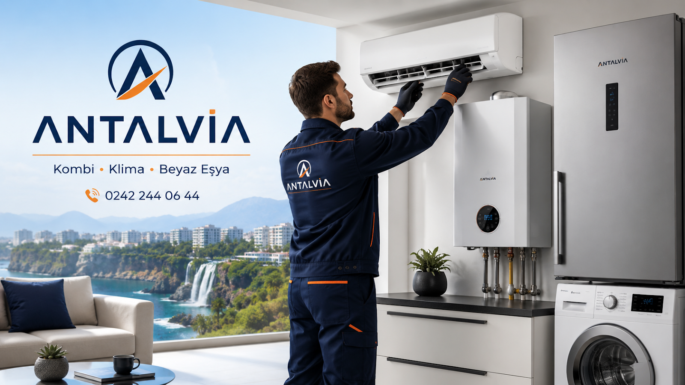
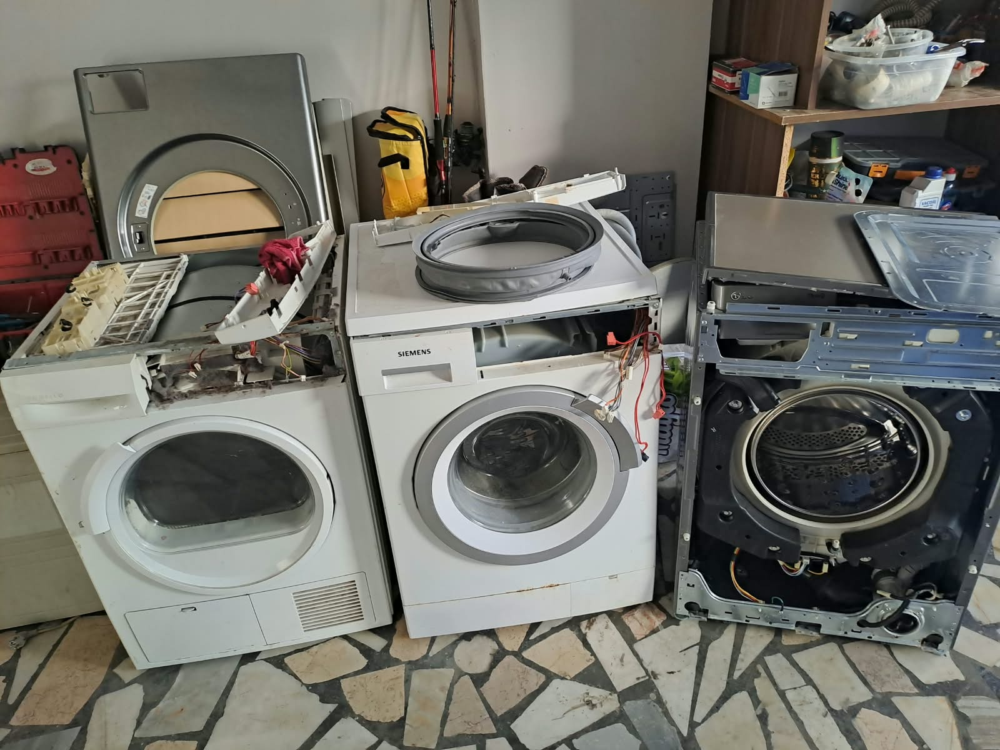
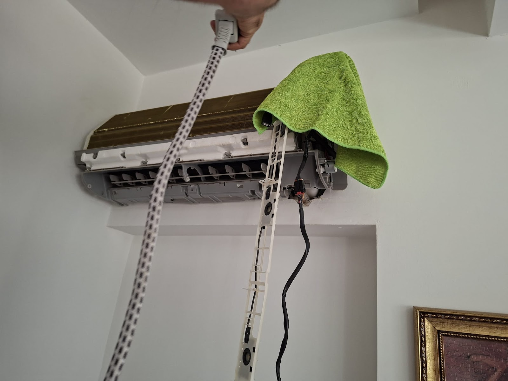
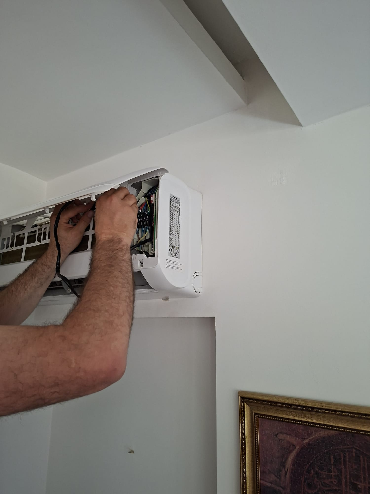

Selfie yükleyin, dişlerinizi çerçeveleyin, kaydırın. Fotoğrafınız telefonunuzdan çıkmaz.
Önce fotoğrafınızı yükleyin.
Simülasyon fikir vermek içindir; gerçek sonuç muayene ve dijital gülüş tasarımı (DSD) ile planlanır.
Tedavilerinizi seçin: tahmini fiyat aralığı, Antalya'da kalmanız gereken gün ve gün gün planınız anında çıksın.
Kombinin çalışmama, ısıtmama gibi sorunlarında arıza tespit edilir ve yerinde ya da atölyede onarılır.
Anakart arızalarında değiştirmeden önce kartın onarılıp onarılamayacağına bakılır.
Soğutmama gibi şikâyetlerde arıza bulunur ve klima yeniden verimli çalışır hale getirilir. Arçelik dahil farklı marka klimalarla çalışılır.
Klimanın iç ünitesi buharlı makineyle temizlenir. Ev kullanıcıları için de hijyen hassasiyeti yüksek mekânlar için de uygundur.
Klinik, ofis ve iş yerlerindeki tüm klimalar tek ziyarette ve planlı biçimde bakıma alınır.
Muratpaşa ve Antalya'nın çevre ilçelerinde, anlaşılan saatte adresinize gelinir.




Müşterilerimiz sorunların kısa sürede tespit edilip giderildiğini söylüyor. Soğutmayan klima da, arızalı kombi anakartı da bunlara dahil.
Başka yerlerde yüksek fiyat çıkan işler burada daha uygun bir bedelle çözülebiliyor. Yorumlarda en çok bu fark övülüyor.
Randevu saatine uyulur, iş temiz yapılır, bittiğinde sorun tamamen giderilmiş olur.
Evlerde ve klinik gibi hijyenin önemli olduğu yerlerde klimalar buharlı makinelerle temizlenir.
📍 Altındağ, Teoman Paşa Cd. 30/D, 07050 Muratpaşa/Antalya
🕑 Pzt–Cmt 08:00–00:00 · Paz kapalı